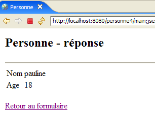
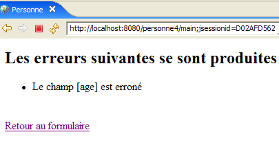

9. تطبيق الويب MVC [personne] – الإصدار 4
تستخدم هذه الإصدارات مكتبة العلامات JSTL التي تم عرضها سابقًا.
9.1. مشروع Eclipse
لإنشاء مشروع Eclipse [mvc-personne-04] لتطبيق الويب [/personne4]، سنقوم بنسخ مشروع [mvc-personne-03] باتباع الإجراء الموضح في الفقرة 6.2، صفحة 78.
 |  |
9.2. تكوين تطبيق الويب [personne4]
الملف web.xml لتطبيق /personne4 هو التالي:
<?xml version="1.0" encoding="UTF-8"?>
<web-app id="WebApp_ID" version="2.4"
xmlns="http://java.sun.com/xml/ns/j2ee"
xmlns:xsi="http://www.w3.org/2001/XMLSchema-instance"
xsi:schemaLocation="http://java.sun.com/xml/ns/j2ee http://java.sun.com/xml/ns/j2ee/web-app_2_4.xsd">
<display-name>mvc-personne-04</display-name>
...
هذا الملف مطابق لملف الإصدار السابق باستثناء السطر 6 حيث تغير اسم عرض تطبيق الويب إلى [mvc-personne-04].
تتغير الصفحة الرئيسية [index.jsp] إلى:
<%@ page language="java" contentType="text/html; charset=ISO-8859-1"
pageEncoding="ISO-8859-1"%>
<%@ taglib uri="/WEB-INF/c.tld" prefix="c" %>
<c:redirect url="/main"/>
- السطر 5: تقوم الصفحة [index.jsp] بإعادة توجيه العميل إلى عنوان URL [/main] الذي يؤدي إلى وحدة التحكم [ServletPersonne] لتطبيق [/personne4]. تنتمي العلامة <c:redirect> إلى مكتبة JSTL / Core. وتتميز هذه العلامة بإكمال عنوان URL الخاص بسمتها [url] بإضافة:
- البادئة [/contexte]، حيث [contexte] هو سياق التطبيق، وهو هنا [personne4].
- اللاحقة [?jsessionid=id_session] إذا لم يرسل المتصفح الذي يقوم بالطلب ملف تعريف ارتباط للجلسة. يشير المعرف [jsessionid] إلى معرف رمز الجلسة الذي يرسله خادم الويب إلى عملائه. وهو يعتمد على خادم الويب. وهنا، هو معرف خادم Tomcat. [id_session] هو رمز الجلسة نفسه.
وبالتالي، فإن عنوان URL الحقيقي لإعادة التوجيه في السطر 5 من [index.jsp] هو عنوان URL [/personne4/main?jsessionid=XX] حيث XX هو رمز الجلسة. وهذا ما تظهره الصفحة أدناه التي تم الحصول عليها بعد طلب عنوان URL [http://localhost:8080/personne4] في البداية:

العلاقة بين علامة <c:redirect> ورمز الجلسة دقيقة للغاية. من السابق لأوانه تناولها هنا، لكننا سنعود إليها لاحقًا.
9.3. كود العروض
9.3.1. الطريقة [formulaire]
لم تتغير هذه العرض:
يتم إنشاؤها بواسطة الصفحة التالية: JSP [formulaire.jsp]
<%@ page language="java" contentType="text/html; charset=ISO-8859-1"
pageEncoding="ISO-8859-1"%>
<!DOCTYPE HTML PUBLIC "-//W3C//DTD HTML 4.01 Transitional//EN">
<%@ taglib uri="/WEB-INF/c.tld" prefix="c" %>
<html>
<head>
<title>Personne - formulaire</title>
<script language="javascript">
...
</script>
</head>
<body>
<center>
<h2>Personne - formulaire</h2>
<hr>
<form name="frmPersonne" method="post">
<table>
<tr>
<td>Nom</td>
<td><input name="txtNom" value="${nom}" type="text" size="20"></td>
</tr>
<tr>
<td>Age</td>
<td><input name="txtAge" value="${age}" type="text" size="3"></td>
</tr>
<tr>
</table>
<table>
<tr>
<td><input type="submit" value="Submit"></td>
<td><input type="button" value="[Envoyer]" onclick="envoyer()"></td>
<td><input type="reset" value="Rétablir"></td>
<td><input type="button" value="[Effacer]" onclick="effacer()"></td>
</tr>
</table>
<input type="hidden" name="action" value="validationFormulaire">
</form>
</center>
</body>
</html>
المستجدات:
- السطر 4: إعلان مكتبة العلامات JSTL / Core
- السطران 21 و25: استرداد سمات [nom, age] في نموذج الصفحة. تجدر الإشارة إلى أنه سيتم البحث عن هذه السمات بالتتابع في الاستعلام [request]، والجلسة [session]، والتطبيق [application] للصفحة JSP. في حالتنا، سيضعها المتحكم في الجلسة.
- لم يعد هناك كود Java في بداية الصفحة JSP لاسترداد نموذج الصفحة بسبب العملية السابقة.
9.3.2. الطريقة [reponse]
لم تتغير هذه العرض:
 |  |
الصفحة الجديدة JSP [reponse.jsp] هي التالية:
<%@ page language="java" contentType="text/html; charset=ISO-8859-1"
pageEncoding="ISO-8859-1"%>
<!DOCTYPE HTML PUBLIC "-//W3C//DTD HTML 4.01 Transitional//EN">
<%@ taglib uri="/WEB-INF/c.tld" prefix="c" %>
<html>
<head>
<title>Personne</title>
</head>
<body>
<h2>Personne - réponse</h2>
<hr>
<table>
<tr>
<td>Nom</td>
<td>${nom}</td>
</tr>
<tr>
<td>Age</td>
<td>${age}</td>
</tr>
</table>
<br>
<form name="frmPersonne" method="post">
<input type="hidden" name="action" value="retourFormulaire">
</form>
<a href="javascript:document.frmPersonne.submit();">
${lienRetourFormulaire}
</a>
</body>
</html>
المستجدات:
- السطر 4: إعلان مكتبة العلامات JSTL / Core
- الأسطر 16 و20 و28: استرداد سمات [nom, age, lienRetourFormulaire] في نموذج الصفحة. لم يعد هناك كود Java في بداية الصفحة JSP لاسترداد هذا الكود.
9.3.3. العرض [erreurs]
لم تتغير هذه العرض:
 |  |
الصفحة الجديدة JSP [erreurs.jsp] هي التالية:
<%@ page language="java" contentType="text/html; charset=ISO-8859-1"
pageEncoding="ISO-8859-1"%>
<!DOCTYPE HTML PUBLIC "-//W3C//DTD HTML 4.01 Transitional//EN">
<%@ taglib uri="/WEB-INF/c.tld" prefix="c" %>
<html>
<head>
<title>Personne</title>
</head>
<body>
<h2>Les erreurs suivantes se sont produites</h2>
<ul>
<c:forEach var="erreur" items="${erreurs}">
<li>${erreur}</li>
</c:forEach>
</ul>
<br>
<form name="frmPersonne" method="post">
<input type="hidden" name="action" value="retourFormulaire">
</form>
<a href="javascript:document.frmPersonne.submit();">
${lienRetourFormulaire}
</a>
</body>
</html>
المستجدات:
- السطر 4: إعلان مكتبة العلامات JSTL / Core
- الأسطر 13-15: عرض قائمة الأخطاء باستخدام JSTL
- لم يعد هناك كود Java في بداية الصفحة JSP لاسترداد نموذجها.
9.4. اختبارات العروض
لإجراء اختبارات العروض السابقة، نقوم بنسخ صفحاتها JSP في المجلد /WebContent/JSP من مشروع Eclipse:

ثم في المجلد JSP، يتم تعديل الصفحات على النحو التالي:
[formulaire.jsp]:
...
<%
// -- اختبار: يتم إنشاء نموذج الصفحة
session.setAttribute("nom","tintin");
session.setAttribute("age","30");
%>
<html>
<head>
تمت إضافة السطرين 4-5 لإنشاء النموذج الذي تحتاجه الصفحة.
[reponse.jsp]:
...
<%
// -- اختبار: إنشاء نموذج الصفحة
request.setAttribute("nom","milou");
request.setAttribute("age","10");
request.setAttribute("lienRetourFormulaire","Retour au formulaire");
%>
<html>
<head>
...
تمت إضافة الأسطر 4-6 لإنشاء القالب الذي تحتاجه الصفحة.
[erreurs.jsp]:
<%
// -- اختبار: إنشاء نموذج الصفحة
ArrayList<String> erreurs1=new ArrayList<String>();
erreurs1.add("erreur1");
erreurs1.add("erreur2");
request.setAttribute("erreurs",erreurs1);
request.setAttribute("lienRetourFormulaire","Retour au formulaire");
%>
<html>
<head>
تمت إضافة الأسطر 4-8 لإنشاء النموذج الذي تحتاجه الصفحة.
قم بتشغيل Tomcat إذا لم تكن قد قمت بذلك بالفعل، ثم اطلب العناوين التالية:
 |  |
 |
نحصل بالفعل على العروض المتوقعة.
9.5. وحدة التحكم [ServletPersonne]
ستقوم وحدة التحكم [ServletPersonne] الخاصة بتطبيق الويب [/personne3] بمعالجة الإجراءات التالية:
رقم | الطلب | الأصل | المعالجة |
1 | [GET /personne4/main] | رابط URL الذي أدخله المستخدم | - إرسال عرض [formulaire] فارغ |
2 | [POST /personne4/main] مع المعلمات [txtNom, txtAge، action=validationFormulaire] تم نشرها | النقر على الزر [Envoyer] في العرض [formulaire] | - التحقق من قيم المعلمات [txtNom, txtAge] - إذا كانت غير صحيحة، أرسل العرض [erreurs(erreurs)] - إذا كانت صحيحة، أرسل العرض [reponse(nom,age)] |
3 | [POST /personne4/main] مع المعلمات [action=retourFormulaire] المنشورة | النقر على الرابط [العودة إلى النموذج] من المشاهدات [réponse] و [erreurs]. | - إرسال العرض [formulaire] مملوء مسبقًا بأحدث القيم التي تم إدخالها |
هيكل وحدة التحكم [ServletPersonne] مطابق للنسخة السابقة. نستعرض التعديلات التي تم إجراؤها على الطرق [doInit, doValidationFormulaire, doRetourFormulaire]، حيث لم تتغير الطرق [init, doGet, doPost].
9.5.1. الطريقة [doInit]
تعالج هذه الطريقة الطلب رقم 1 [GET /personne4/main]. ورمزها هو كما يلي:
المستجدات:
- السطر 3: يتم عرض العرض [formulaire]. يتوقع هذا العرض في نموذجه وجود السمتين "name" و"age". ولن يجدهما هناك لأن وحدة التحكم لا تضعهما فيهما. في هذه الحالة، ستسترد مكتبة JSTL مؤشرات null لهذه السمات. لا يتسبب ذلك في حدوث أخطاء، وسيتم عرض قيم فارغة للعناصر ${nom} و ${age} في العرض [formulaire]. وهذا يناسبنا. وبذلك نتجنب الحاجة إلى تهيئة نموذج العرض [formulaire].
9.5.2. الطريقة [doValidationFormulaire]
تعالج هذه الطريقة الطلب رقم 2 [POST /personne4/main] مع [action, txtNom, txtAge] في العناصر المرسلة. ورمزها هو كما يلي:
المستجدات:
- السطر 15: ترسل الطريقة [doValidationFormulaire] عرض [réponse] كاستجابة. يحتوي هذا العرض في نموذجه على العناصر [nom, age, lienRetourFormulaire]. يتم وضع [lienRetourFormulaire] في النموذج في السطر 14، عبر الاستعلام. أما العناصر [nom,age]، فيتم وضعها في النموذج في الأسطر 8-10، عبر الجلسة. في الإصدار السابق، كنا نضع العناصر [nom, age] أيضًا في الطلب عند إرسال العرض [réponse] لأن هذا العرض كان ينتظرها هناك. هنا، مع المكتبة JSTL، نعلم أن السياقات المختلفة (الطلب، الجلسة، التطبيق) سيتم استكشافها للعثور على عناصر النموذج. وبالتالي سيتم العثور عليها في الجلسة لأن وحدة التحكم وضعتها هناك (الأسطر 8-10).
9.5.3. الطريقة [doRetourFormulaire]
تعالج هذه الطريقة الطلب رقم 3 [POST /personne4/main] مع [action=retourFormulaire] في العناصر المرسلة. ورمزها هو كما يلي:
المستجدات:
- السطر 4: يتم عرض العرض [formulaire]. يتوقع هذا العرض في نموذجه السمتين "name" و"age". وستجدهما في الجلسة لأن الطريقة [doValidationFormulaire] قد وضعتهما هناك، ولأن هذه الطريقة تُنفَّذ بالضرورة قبل الطريقة [doRetourFormulaire]. لذلك، لا داعي لتهيئة نموذج [formulaire] قبل عرضه في السطر 4. وبالتالي، فإن الطريقتين [doInit] و [doRetourFormulaire] متطابقتان ويمكن حذف الإجراء [retourFormulaire] واستبداله بالإجراء [init]. وبالتالي، ستختفي الطريقة [doRetourFormulaire].
9.6. الاختبارات
في هذه النسخة الجديدة، تتغير العروض فقط. أما وحدة التحكم [ServletPersonne] فلا تتغير. لقد سمح لنا استخدام JSTL ببساطة باستغلال النموذج الذي أنشأته وحدة التحكم بشكل أسهل في صفحات JSP.
قم بتشغيل أو إعادة تشغيل Tomcat بعد دمج مشروع Eclipse [personne-mvc-04] فيه. اطلب عنوان URL [http://localhost:8080/personne4].